전자산업기사 (2020-06-06 기출문제)
1과목: 전자회로
1. 이상적인 연산증폭기의 특징으로 틀린 것은?
- 대역폭이 무한대이다.
- 전압이득은 무한대이다.
- 입력임피던스는 무한대이다.
- 온도에 대하여 특성 드리프트가 무한대이다.
(정답률: 73%)

2. 병렬전류 궤환 증폭기의 궤환량 β는? (단, Vf : 궤환전압, Vo : 출력전압, If : 궤환전류, Io : 출력전류이다.)
- If/Io
- If/Vo
- Vf/Vo
- Vf/Io
(정답률: 67%)
3. 공통 소스(Common Source) 증폭기에 대한 설명 중 옳은 것은?
- 출력 단자는 소스(Source)이다.
- 입력과 출력의 위상차는 180°이다.
- 입력 단자는 소스(Source)이다.
- 전압이득은 항상 1보다 작다.
(정답률: 59%)
4. 입력 신호 주파수의 변화에 따라 잠기거나 동기화 될 수 있는 전압제어발진기(VCO)를 가지고 있는 회로는?
- 비안정 멀티 바이브레이터
- 단안정 멀티 바이브레이터
- 위상검출기
- 위상 동기(고정) 루프
(정답률: 53%)
5. 다음 회로의 전압이득은?
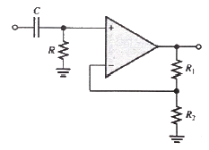
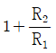
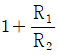
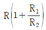
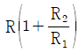
(정답률: 50%)
6. 다음 회로는 MOSFET의 어느 영역에서 동작하는가? (단, μnCox = 100μA/V2, VTH = 0.4V 이다.)
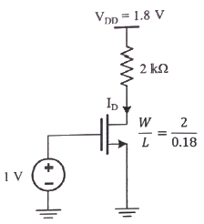
- Cutoff Region
- Triode Region
- Saturation Region
- 구별할 수 없다.
(정답률: 69%)
7. 다음 그림과 같은 회로에서 RL에 50mA의 전류가 흐를 때 RL(Ω)은? (단, Vin = 5V, R1 = 10kΩ, R2 = 470kΩ 이다.)
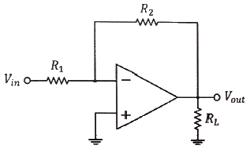
- 47
- 470
- 4700
- 47000
(정답률: 71%)
8. 변조도가 40%인 진폭 변조 송신기에서 반송파의 평균전력이 500mW일 때 변조된 출력의 평균전력은 몇 mW 인가?
- 450
- 500
- 540
- 650
(정답률: 83%)
9. 전압 레귤레이터(Regulator) IC 7912의 출력전압은 몇 V 인가? (단, 입력전압은 IC 동작전압 범위라 가정)
- +12
- +5
- -12
- -5
(정답률: 63%)
10. 활성영역에서 동작하는 BJT의 얼리 효과에 관한 설명으로 옳은 것은?
- VCE의 증가에 따라 컬렉터 전류가 증가한다.
- 컬렉터를 들여다본 출력저항이 무한대(∞)이다.
- VCE의 증가에 따라 실효 베이스 폭이 증가한다.
- VCE의 증가에 따라 컬렉터와 베이스 사이 공핍층이 감소한다.
(정답률: 50%)
11. 다음 회로의 전압이득
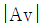
는 얼마인가? (단, R = 100kΩ, Rf = 50kΩ, R1=R2=10kΩ 이다.)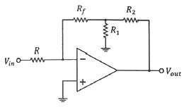
- 1
- 1.1
- 10
- 11
(정답률: 64%)
12. 그림의 반파 정류회로에서 다이오드의 최대 역방향 전압(PIV)은 약 몇 V 인가? (단, 입력 교류 전압 Vin의 실효값은 10V 이다.)
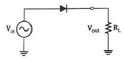
- 10
- 9.3
- 14.14
- 13.44
(정답률: 64%)
13. 전류이득이 약 1 이고, 전압이득 및 출력임피던스가 매우 높은 증폭기는?
- 이미터 접지 증폭기
- 컬렉터 접지 증폭기
- 베이스 접지 증폭기
- 모든 트랜지스터 증폭기
(정답률: 57%)
14. 정귀환을 하는 회로로만 나열한 것은?
- 슈미트 트리거회로, 발진회로
- 미분회로, 적분회로
- 슈미트 트리거회로, 미분회로
- 발진회로, 적분회로
(정답률: 77%)
15. 듀티 사이클(Duty cycle)이 0.5이고, 펄스폭이 0.8μs인 펄스의 주기는 몇 μs 인가?
- 0.4
- 0.625
- 1.3
- 1.6
(정답률: 58%)
16. 다음 회로에서 입력 단자와 출력 단자가 도통되는 상태는?
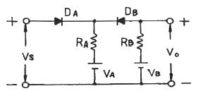
- VS ＞ VB, VA ＜ VB
- VS ＜ VA, VA ＜ VB
- VS ＜ VA, VS ＞ VB
- VS ＞ VA, VS ＜ VB
(정답률: 65%)
17. Switching Device인 TR의 문제점으로 옳은 것은?
- C-E 사이의 스위칭 속도가 빠르다.
- 베이스에 전류가 흐른다.
- C-E 사이의 전류용량이 크다.
- 베이스전류에 의하여 컬렉터 전류가 증폭이 된다.
(정답률: 53%)
18. 회로에서 제너 다이오드의 항복전압 Vz는 몇 V 인가? (단, 출력전압 Vo는 –12V 이다.)
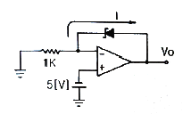
- -5
- 5
- 7
- -7
(정답률: 54%)
19. FM신호의 검파회로에서 별도의 진폭제한회로가 필요 없는 회로는?
- 제곱 검파회로
- 복동조 주파수 변별 회로
- 포스터 실리(Forster-Seeley) 주파수 변별 회로
- 비검파기(ratio detector)
(정답률: 78%)
20. 120V, 60Hz인 사인파가 반파 정류기에 공급될 때, 출력 주파수는 몇 Hz인가?
- 0
- 60
- 30
- 120
(정답률: 74%)
2과목: 전기자기학 및 회로이론
21. 유전체의 분극률 χ(F/m)는? (단, εr는 비유전율이다.)
- εr(ε0-1)
- ε0(εr-1)
- εr-1
- ε0(εr+1)
(정답률: 70%)
22. 전자파의 속도인
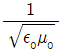
의 값은 약 몇 m/s 인가.?- 1×108
- 2×108
- 3×108
- 4×108
(정답률: 68%)
23. 다음 내용은 어떤 법칙을 설명한 것인가?
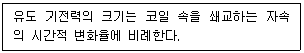
- 쿨롱의 법칙
- 가우스의 법칙
- 맥스웰의 법칙
- 패러데이의 법칙
(정답률: 68%)
24. l1=∞(m), l2=1(m)의 두 직선도선을 50cm의 간격으로 평행하게 놓고, l1의 직선도선을 중심축으로 하여 l2의 직선도선을 속도 100m/s로 회전시키면 l2의 직선도선에 유기되는 전압은 몇 V 인가? (단, l1에 흐르는 전류는 50mA 이다.)
- 0
- 5
- 2×10-6
- 3×10-6
(정답률: 58%)
25. 정상 전류계에서 옴 법칙의 미분형은? (단, σ는 도전율, E는 전계, J는 전류밀도, ρ는 저항률, ρv는 공간전하밀도이다.)
- J = σE
- J = ρE
- ∇J = 0
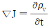
(정답률: 56%)
26. 비유전율이 4인 유전체 내에 있는 1μC의 전하에서 나오는 전 전속(C)은?
- 2.5×10-5
- 1×10-6
- 2×10-6
- 4×10-6
(정답률: 42%)
27. 반지름 a(m)인 직선상 도체에 전류 I(A)가 균일하게 흐를 때 도체내의 전자에너지와 관계가 없는 것은?
- 투자율
- 도체의 길이
- 전류의 크기
- 도체의 단면적
(정답률: 60%)
28. 그림과 같이 전류 I(A)가 흐르고 있는 무한장의 직선도체로부터 r(m) 떨어진 P점에서 자계의 세기 및 방향은? (단, ⊗은 지면을 들어가는 방향, ⊙은 지면을 나오는 방향이다.)
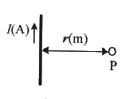
- I/2πr, ⊗
- I/2πr, ⊙
- Idl/4πr2, ⊗
- Idl/4πr2, ⊙
(정답률: 62%)
29. 도체계에서 각 도체의 전위를 V1, V2, ⋯, Vn으로 하기 위한 각 도체의 유도계수와 용량계수에 대한 설명으로 옳은 것은?
- q11, q22, q33 등을 유도계수라 한다.
- q21, q31, q41 등을 용량계수라 한다.
- 일반적으로 유도계수는 0보다 작거나 같다.
- 용량계수와 유도계수의 단위는 모두 V/C이다.
(정답률: 55%)
30. 점 P(1, 2, 3)(m)와 Q(2, 0, 5)(m)에 각각 4×10-5C과 2×10-4C의 점전하가 있을 때, 점 P에 작용하는 힘은 몇 N 인가?
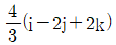
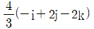
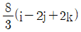
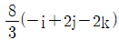
(정답률: 60%)
31. 정 K형 여파기(constant K-type filter)에 있어서 임피던스 Z1, Z2는 어떻게 나타내는가? (단, K는 공칭 임피던스라 한다.)
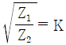
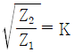
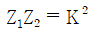
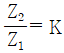
(정답률: 75%)
32. 다음 회로의 극점의 개수는?
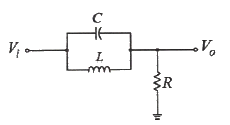
- 1
- 2
- 3
- 4
(정답률: 61%)
33. RL 직렬회로에 60Hz, 100V의 교류전압을 가했더니 위상이 전압보다 30° 뒤진 5A의 전류가 흘렀다. 이때의 리액턴스는 몇 Ω 인가?
- 20
- 10
- 10√3
- 12
(정답률: 45%)
34. 차단 주파수에 대한 설명으로 틀린 것은?
- 전력이 최대값이 1/2이 되는 주파수이다.
- 출력 전압이 최대값이 1/√2 이 되는 주파수이다.
- 출력 전류가 최대값의 1/√2이 되는 주파수이다.
- 전압과 전류의 위상차가 60°가 되는 주파수이다.
(정답률: 56%)
35. 다음 회로에서 전압 V3는 몇 V 인가?
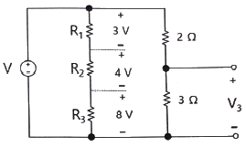
- 3
- 9
- 12
- 15
(정답률: 67%)
36. 다음 회로에서 합성저항이 48Ω일 때, R은 몇 Ω 인가?
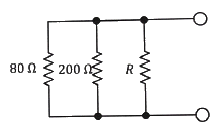
- 100
- 200
- 300
- 400
(정답률: 64%)
37. 40+j30(V)인 전압을 어떤 회로에 인가했더니 4+j(A)인 전류가 흘렀다. 이 회로에서 소비되는 전력은 몇 W 인가?
- 80
- 190
- 320
- 480
(정답률: 55%)
38. 내부 임피던스가 순 저항 160Ω인 전원과 360Ω의 순 저항 부하 사이에 임피던스 정합을 위한 이상변압기의 권선비 N1:N2는?
- 1 : 2
- 1 : 3
- 2 : 3
- 1 : 4
(정답률: 65%)
39.
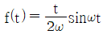
의 라플라스 변환은?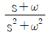
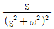
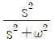
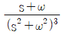
(정답률: 68%)
40. RC 직렬회로에 인가된 전압의 주파수가 증가하면 임피던스의 변화는 어떻게 되는가?
- 증가한다.
- 감소한다.
- 변하지 않는다.
- 2배가 된다.
(정답률: 61%)
3과목: 전자계산기일반
41. 다음 중 데이터를 병렬로 전송하는 것은?
- RS-232C
- RS-422
- RS-485
- RS-488
(정답률: 60%)
42. 인쇄된 글자를 빛을 쪼여서 반사되는 빛으로 해당되는 글자를 직접 판독하는 장치는?
- OMR
- OCR
- MICR
- COMR
(정답률: 75%)
43. 하드웨어와 소프트웨어의 중간적인 성격을 갖는 것으로서 프로그램이라는 관점에서는 소프트웨어와 동일하지만 하드웨어와 밀접한 관계를 가지는 것은?
- Firmware
- Operating System
- Micro Processor
- System software
(정답률: 65%)
44. 인출 사이클(Fetch Cycle)에 대한 설명으로 가장 옳은 것은?(문제 오류로 가답안 발표시 1번으로 발표되었지만 확정답안 발표시 1, 2번이 정답처리 되었습니다. 여기서는 가답안인 1번을 누르시면 정답 처리 됩니다.)
- 명령어를 꺼내어 해독될 때까지의 과정
- 주기억장치에 기억된 명령어를 꺼내는 과정
- 명령어가 해독된 다음 실행되는 과정
- 명령어를 저장하는 과정
(정답률: 76%)
45. 주기억장치에서 기억장소의 지정은 무엇에 의해서 이루어지는가?
- BYTE
- WORD
- RECORD
- ADDRESS
(정답률: 75%)
46. -25를 2의 보수 형태 2진수로 나타내어 다시 이를 왼쪽으로 1비트만큼 산술 이동했을 때의 값은?
- 11100110
- 11001110
- 11100111
- 11001111
(정답률: 57%)
47. 트랜지스터나 다이오드 같은 능동 소자와 저항과 같은 수동 소자들을 별도로 제작, 하나의 기판 위에 땜질하여 형성시킨 회로를 무엇이라고 하는가?
- Hybrid IC
- PMOS
- ECL
- TTL
(정답률: 61%)
48. 소프트웨어적인 방법으로 인터럽트 요청신호 플래그를 차례로 검사하여 인터럽트의 발생위치를 찾는 방식은?
- 데이지체인 방식
- 폴링 방식
- 레지스터 방식
- 스트로브 방식
(정답률: 67%)
49. 연산장치에서 산술연산회로의 구성요소로 쓰이는 논리 회로는?
- 반감산기
- 전감산기
- 반가산기
- 전가산기
(정답률: 74%)
50. 컴퓨터 주기억장치 용량이 4096비트이고, 워드 길이가 16비트일 때, PC(Program Counter), AR(Address Register)와 DR(Data Register)의 크기는?
- PC = 12, AR = 12, DR = 16
- PC = 12, AR = 12, DR = 8
- PC = 16, AR = 8, DR = 16
- PC = 8, AR = 8, DR = 16
(정답률: 59%)
51. 다음 중 목적 프로그램을 시스템 라이브러리와 연결시켜 실행 가능한 모듈로 생성해 주는 역할을 하는 것은?
- Linker
- Loader
- Debugger
- Assembler
(정답률: 73%)
52. 숫자나 문자 등의 키보드 입력을 2진 코드로 부호화 하는 것은?
- 디코더
- 인코더
- 멀티플렉서
- 디멀티플렉서
(정답률: 65%)
53. 에러(error)의 발생을 검출하고 교정을 할 수 있는 코드는?
- BCD Code
- ASCⅡ Code
- Hamming Code
- Excess-3 Code
(정답률: 79%)
54. 4입력 변수의 디코더는 최대 몇 개의 출력을 가지는가?
- 4개
- 8개
- 16개
- 32개
(정답률: 75%)
55. 10진수로 표현된 (14.625)10을 2진수로 변환하면?
- 1010.011
- 1100.101
- 1011.111
- 1110.101
(정답률: 70%)
56. 다음 SR플립플롭의 여기표에서 (A)에 가장 적합한 것은? (단, X는 Don't care이다.)
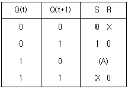
- S=0, R=0
- S=1, R=0
- S=0, R=1
- S=1, R=1
(정답률: 74%)
57. 다음 중 함수 연산 명령에 속하지 않는 것은?
- ADD
- CLA
- JMP
- ROL
(정답률: 70%)
58. Excess-3 코드를 잉요하여 5와 3을 더하면?
- 1110
- 0111
- 1001
- 1011
(정답률: 63%)
59. 연산자(operator)의 기능에 속하지 않은 것은?
- 주소지정 기능
- 전달 기능
- 제어 기능
- 입·출력 기능
(정답률: 51%)
60. 다음 중 제어장치가 하는 것은?
- 논리 연산
- 명령어 해독
- 번지 부여
- 피가수 기억
(정답률: 58%)
4과목: 전자계측
61. 상호 인덕턴스 계측에 주로 사용하는 bridge는?
- Wien bridge
- Kohlrausch bridge
- Schering bridge
- Campbell bridge
(정답률: 67%)
62. 다음 회로는 전력을 측정하기 위한 계기의 구성이다. 부하 R의 전력은 몇 W 인가?(문제 오류로 가답안 발표시 2번으로 발표되었지만 확정답안 발표시 모두 정답처리 되었습니다. 여기서는 가답안인 2번을 누르면 정답 처리 됩니다.)
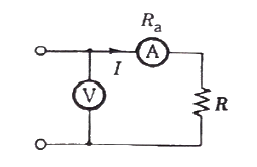
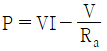
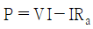
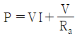
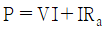
(정답률: 70%)
63. 오실로스코프아 싱크로스코프가 다른 점은?
- 편향 부분
- 휘도 조정 부분
- 초점 조정 부분
- 동기 회로 부분
(정답률: 62%)
64. 측정용 저주파 발진기로 주로 사용되는 것은?
- RC 발진기
- LC 발진기
- 레이저 발진기
- 음차 발진기
(정답률: 64%)
65. 다음 중 고주파용 주파수계가 아닌 것은?
- 레헤르(Lecher)선 주파수계
- 진동형 주파수계
- 헤테로다인 주파수계
- 흡수형 주파수계
(정답률: 57%)
66. 다음 교류 브리지 회로가 평형되었을 때 L의 값은?
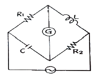
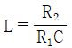
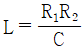
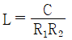
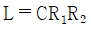
(정답률: 56%)
67. 디지털 계측기에 관한 설명 중 틀린 것은?
- 정도가 높은 측정이 가능하다.
- 측정이 매우 쉽고, 신속히 이루어진다.
- 잡음에 덜 민감하여, 측정 정도를 낮출 수 있다.
- 측정값을 읽을 때 개인적 오차가 발생하지 않는다.
(정답률: 66%)
68. 어느 회로망의 입력단자 및 출력단자의 전압을 각각 오시로스코프의 수직, 수평 단자에 인가해서 화면이 다음과 같을 때, 위상각(θ)로 옳은 것은?
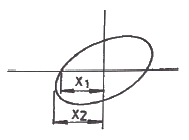
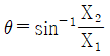
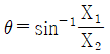
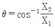
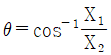
(정답률: 66%)
69. 표준신호 발생기(SSG)의 출력 전압이 1V인 경우 dB로 표현하면 얼마인가?
- 20
- 40
- 60
- 120
(정답률: 41%)
70. 단상 교류 전력을 측정하기 위한 방법이 아닌 것은?
- 3전류계법
- 3전압계법
- 단상 전력계법
- 3전력계법
(정답률: 69%)
71. 고주파 전력측정법으로 적합하지 않은 것은?
- 표준 부하법
- C-C형 전류계법
- C-M형 전류계법
- 전압 전류계법
(정답률: 62%)
72. 전자계수기(주파수 카운터)에서 발생시키는 오차가 아닌 것은?
- 시간축 오차
- 트리거 오차
- 계통 오차
- 개인적 오차
(정답률: 55%)
73. 디지털 오실로스코프의 구성요소가 아닌 것은?
- ADC(analog to digital converter)
- DAC(digital to analog converter)
- 메모리
- 음극선관
(정답률: 59%)
74. 다음 전지 내부저항 측정 회로에서 S를 열었을 때 6V, S을 닫았을 때 4V, 전류는 0.5A이었다. 전지의 내부저항 r은 몇 Ω 인가?
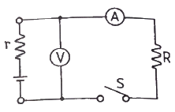
- 12
- 10
- 4
- 2
(정답률: 47%)
75. 직류전압계를 사용하여 동작중인 회로의 직류전압을 측정하고자 한다. 이때 사용되는 직류전압계는 다음 중 어떠한 조건을 만족하여야 하는가?
- 내부저항이 가급적 클수록 좋다.
- 내부저항이 가급적 작을수록 좋다.
- 계기의 측정오차 범위가 지정되어 있으므로 내부 저항은 별로 상관없다.
- 직류 전압만 측정하면 되므로 전압계의 내부 정전 용량의 대소에는 상관이 없다.
(정답률: 61%)
76. 계수형 주파수계의 측정 시 주의사항 중 틀린 것은?
- 입력 임피던스를 높게 하여 피측정 회로의 영향을 주지 않도록 할 것
- 기준 발진기의 확도를 높이기 위하여 표준 전파 등에 교정하여서 측정할 것
- ±카운터 오차를 방지하기 위하여 게이트 시간을 아주 짧게 하여 확도를 높일 것
- 감도 감쇠기는 감도가 낮은 곳에 놓고, 입력을 가한 후 차례로 감도를 높일 것
(정답률: 69%)
77. 전선을 절단하지 않고 활선 상태에서 전류를 측정할 수 있는 것은?
- 직류 변류기
- 클램프 미터
- 열전형 전류계
- 가동 코일형 계기
(정답률: 65%)
78. 오실로스코프로 측정 불가능한 것은?
- 전압
- 변조도
- 전하량
- 주파수
(정답률: 68%)
79. 오차의 종류에 대한 설명 중 틀린 것은?
- 개인적 오차 : 측정값을 읽는 사람에 따라 다르게 읽어 생기는 오차
- 계통적 오차 : 눈금의 부정확, 외부자장의 영향, 계깅차 등 일정한 원인이 있는 오차
- 과실 오차 : 측정자의 부주의에 의해서 일어나는 오차
- 우연 오차 : 계기의 우연한 변화로 인해 측정값의 지시가 틀리는 오차
(정답률: 61%)
80. 어떤 정보를 가지고 있는 신호라 할지라도 그 정보가 아니거나 원하는 정보 신호의 형태를 일그러뜨리거나 세기를 변화시키는 것은?
- 음압
- 감도
- 잡음
- 증폭
(정답률: 75%)